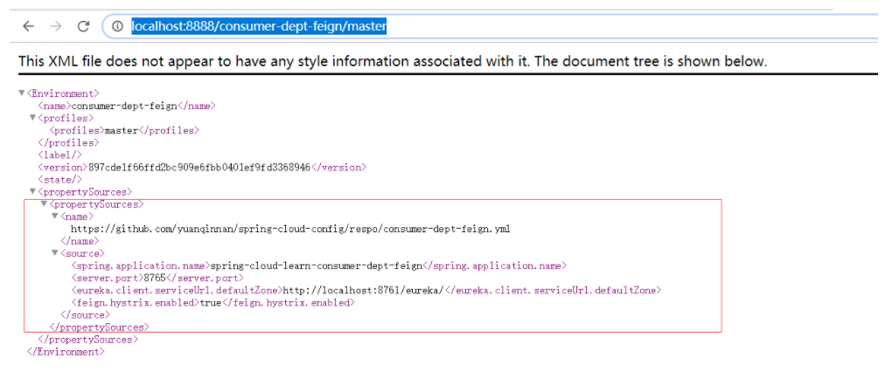

在 Spring Cloud 微服务系统中，一种常见的负载均衡方式是，客户端的请求首先经过负载均衡（Ngnix），再到达服务网关（Zuul 集群），然后再到具体的服务。服务统一注册到高可用的服务注册中心集群，服务的所有的配置文件由配置服务管理，配置服务的配置文件放在 GIT 仓库，方便开发人员随时改配置。
Zuul包含了对请求的路由和过滤两个最主要的功能： 其中路由功能负责将外部请求转发到具体的微服务实例上，是实现外部访问统一入口的基础而过滤器功能则负责对请求的处理过程进行干预，是实现请求校验、服务聚合等功能的基础.
Zuul和Eureka进行整合，将Zuul自身注册为Eureka服务治理下的应用，同时从Eureka中获得其他微服务的消息，也即以后的访问微服务都是通过Zuul跳转后获得。Zuul服务最终还是会注册进Eureka。
总体来说Zuul提供代理、路由、过滤三大功能。
创建一个spring-cloud-learn-zuul项目，创建方式与之前相同，pom.xml文件如下：
<?xml version="1.0" encoding="UTF-8"?>
<project xmlns="http://maven.apache.org/POM/4.0.0" xmlns:xsi="http://www.w3.org/2001/XMLSchema-instance"
xsi:schemaLocation="http://maven.apache.org/POM/4.0.0 http://maven.apache.org/xsd/maven-4.0.0.xsd">
<modelVersion>4.0.0</modelVersion>
<parent>
<groupId>com.yuanqinnan</groupId>
<artifactId>spring-cloud-learn-parent</artifactId>
<version>1.0.0-SNAPSHOT</version>
</parent>
<artifactId>spring-cloud-learn-zuul</artifactId>
<packaging>jar</packaging>
<name>spring-cloud-learn-zuul</name>
<dependencies>
<!-- Spring Boot Begin -->
<dependency>
<groupId>org.springframework.boot</groupId>
<artifactId>spring-boot-starter-web</artifactId>
</dependency>
<dependency>
<groupId>org.springframework.boot</groupId>
<artifactId>spring-boot-starter-tomcat</artifactId>
</dependency>
<dependency>
<groupId>org.springframework.boot</groupId>
<artifactId>spring-boot-starter-actuator</artifactId>
</dependency>
<dependency>
<groupId>org.springframework.boot</groupId>
<artifactId>spring-boot-starter-test</artifactId>
<scope>test</scope>
</dependency>
<!-- Spring Boot End -->
<!-- Spring Cloud Begin -->
<dependency>
<groupId>org.springframework.cloud</groupId>
<artifactId>spring-cloud-starter-netflix-eureka-server</artifactId>
</dependency>
<dependency>
<groupId>org.springframework.cloud</groupId>
<artifactId>spring-cloud-starter-netflix-zuul</artifactId>
</dependency>
<!-- Spring Cloud End -->
</dependencies>
</project>新建启动类ZuulApplication，增加@EnableZuulProxy注解
@SpringBootApplication
@EnableEurekaClient
@EnableZuulProxy
public class ZuulApplication {
public static void main(String[] args) {
SpringApplication.run(ZuulApplication.class, args);
}
}application.yml配置如下：
spring:
application:
name: spring-cloud-learn-zuul
server:
port: 8769
eureka:
client:
serviceUrl:
defaultZone: http://localhost:8761/eureka/
zuul:
routes:
api-a:
path: /api/a/**
serviceId: spring-cloud-learn-consumer-dept-ribbon
api-b:
path: /api/b/**
serviceId: spring-cloud-learn-consumer-dept-feign这个配置文件也很好理解，主要是配置路由：
以 /api/a 开头的请求都转发给 spring-cloud-learn-consumer-dept-ribbon 服务
以 /api/b 开头的请求都转发给 spring-cloud-learn-consumer-dept-feign 服务
然后再启动之前的所有项目
打开浏览器访问：http://localhost:8769/api/a/hi?message=HelloZuul 浏览器显示
Hi，your message is :"HelloZuul" i am from port：8763
打开浏览器访问：http://localhost:8769/api/a/hi?message=HelloZuul 浏览器显示
Hi，your message is : HelloZuul i am from port : 8763
@Component
public class ConsumerDeptFeignFallbackProvider implements FallbackProvider {
@Override
public String getRoute() {
// ServiceId，如果需要所有调用都支持回退，则 return "*" 或 return null
return "spring-cloud-learn-consumer-dept-feign";
}
/**
* 如果请求服务失败，则返回指定的信息给调用者
* @param
* @return
* @date
*/
@Override
public ClientHttpResponse fallbackResponse(String route, Throwable cause) {
return new ClientHttpResponse() {
/**
* 网关向 api 服务请求失败了，但是消费者客户端向网关发起的请求是成功的，
* 不应该把 api 的 404,500 等问题抛给客户端
* 网关和 api 服务集群对于客户端来说是黑盒
* @return
* @throws IOException
*/
@Override
public HttpStatus getStatusCode() throws IOException {
return HttpStatus.OK;
}
@Override
public int getRawStatusCode() throws IOException {
return HttpStatus.OK.value();
}
@Override
public String getStatusText() throws IOException {
return HttpStatus.OK.getReasonPhrase();
}
@Override
public void close() {
}
@Override
public InputStream getBody() throws IOException {
ObjectMapper objectMapper = new ObjectMapper();
Map<String, Object> map = new HashMap<>();
map.put("status", 200);
map.put("message", "无法连接，请检查您的网络");
return new ByteArrayInputStream(objectMapper.writeValueAsString(map).getBytes("UTF-8"));
}
@Override
public HttpHeaders getHeaders() {
HttpHeaders headers = new HttpHeaders();
// 和 getBody 中的内容编码一致
headers.setContentType(MediaType.APPLICATION_JSON_UTF8);
return headers;
}
};
}
}Zuul 不仅仅只是路由，还有很多强大的功能，本节演示一下它的服务过滤功能，比如用在安全验证方面。
来创建下过滤器功能：只要继承 ZuulFilter 类并在类上增加 @Component 注解就可以使用服务过滤功能了
@Component
public class LoginFilter extends ZuulFilter {
private static final Logger logger = LoggerFactory.getLogger(LoginFilter.class);
/**
* 配置过滤类型，有四种不同生命周期的过滤器类型
* 1. pre：路由之前
* 2. routing：路由之时
* 3. post：路由之后
* 4. error：发送错误调用
*/
@Override
public String filterType() {
return "pre";
}
/**
* 配置过滤的顺序
*/
@Override
public int filterOrder() {
return 0;
}
/**
* 配置是否需要过滤：true/需要，false/不需要
*/
@Override
public boolean shouldFilter() {
return false;
}
/**
* 过滤器的具体业务代码
* @param
*/
@Override
public Object run() throws ZuulException {
RequestContext context = RequestContext.getCurrentContext();
HttpServletRequest request = context.getRequest();
logger.info("{} >>> {}", request.getMethod(), request.getRequestURL().toString());
String token = request.getParameter("token");
if (token == null) {
logger.warn("Token is empty");
context.setSendZuulResponse(false);
context.setResponseStatusCode(401);
try {
context.getResponse().getWriter().write("Token is empty");
} catch (IOException e) {
}
} else {
logger.info("OK");
}
return null;
}这里的四个方法：
filterType：返回一个字符串代表过滤器的类型，在 Zuul 中定义了四种不同生命周期的过滤器类型
pre：路由之前routing：路由之时
post： 路由之后
error：发送错误调用
filterOrder：过滤的顺序
shouldFilter：是否需要过滤，这里是 true，需要过滤
run：过滤器的具体业务代码
测试下:http://localhost:8769/api/a/hi?message=HelloZuul 网页显示
Token is empty
http://localhost:8769/api/b/hi?message=HelloZuul&token=123 网页显示
Hi，your message is :"HelloZuul" i am from port：8763
在分布式系统中，由于服务数量巨多，为了方便服务配置文件统一管理，实时更新，所以需要分布式配置中心组件。在 Spring Cloud 中，有分布式配置中心组件 Spring Cloud Config ，它支持配置服务放在配置服务的内存中（即本地），也支持放在远程 Git 仓库中。在 Spring Cloud Config 组件中，分两个角色，一是 Config Server，二是 Config Client。
<?xml version="1.0" encoding="UTF-8"?>
<project xmlns="http://maven.apache.org/POM/4.0.0" xmlns:xsi="http://www.w3.org/2001/XMLSchema-instance"
xsi:schemaLocation="http://maven.apache.org/POM/4.0.0 http://maven.apache.org/xsd/maven-4.0.0.xsd">
<modelVersion>4.0.0</modelVersion>
<parent>
<groupId>com.yuanqinnan</groupId>
<artifactId>spring-cloud-learn-parent</artifactId>
<version>1.0.0-SNAPSHOT</version>
</parent>
<artifactId>spring-cloud-learn-config</artifactId>
<packaging>jar</packaging>
<name>spring-cloud-learn-config</name>
<dependencies>
<!-- Spring Boot Begin -->
<dependency>
<groupId>org.springframework.boot</groupId>
<artifactId>spring-boot-starter-web</artifactId>
</dependency>
<dependency>
<groupId>org.springframework.boot</groupId>
<artifactId>spring-boot-starter-tomcat</artifactId>
</dependency>
<dependency>
<groupId>org.springframework.boot</groupId>
<artifactId>spring-boot-starter-actuator</artifactId>
</dependency>
<dependency>
<groupId>org.springframework.boot</groupId>
<artifactId>spring-boot-starter-test</artifactId>
<scope>test</scope>
</dependency>
<!-- Spring Boot End -->
<!-- Spring Cloud Begin -->
<dependency>
<groupId>org.springframework.cloud</groupId>
<artifactId>spring-cloud-config-server</artifactId>
</dependency>
<dependency>
<groupId>org.springframework.cloud</groupId>
<artifactId>spring-cloud-starter-netflix-eureka-server</artifactId>
</dependency>
<!-- Spring Cloud End -->
</dependencies>
</project>
@SpringBootApplication
@EnableConfigServer
@EnableEurekaClient
public class ConfigApplication {
public static void main(String[] args) {
SpringApplication.run(ConfigApplication.class, args);
}
}
spring:
application:
name: spring-cloud-learn-config
cloud:
config:
label: master
server:
git:
uri: https://github.com/yuanqinnan/spring-cloud-config
search-paths: respo
username:
password:
server:
port: 8888
eureka:
client:
serviceUrl:
defaultZone: http://localhost:8761/eureka/这里注意的地方是端口号不要修改，使用8888，如要修改创建一个bootstrap.properties文件进行修改，原因是 bootstrap 开头的配置文件会被优先加载和配置，切记。
这里的配置文件也比较好理解，相关配置说明，如下：
spring.cloud.config.label：配置仓库的分支
spring.cloud.config.server.git.uri：配置 Git 仓库地址（GitHub、GitLab、码云 ...）
spring.cloud.config.server.git.search-paths：配置仓库路径（存放配置文件的目录）
spring.cloud.config.server.git.username：访问 Git 仓库的账号
spring.cloud.config.server.git.password：访问 Git 仓库的密码
注意事项：
如果使用 GitLab 作为仓库的话，git.uri 需要在结尾加上 .git，GitHub 则不用
我们想要测试的话，先在自己的github上新建一个仓库，并新增respo文件夹（存放配置文件的目录），然后新增一个配置文件consumer-dept-feign.yml(这个是配置feign项目的)即可，然后我们就可以看看效果：
访问路径为：http://localhost:8888/consumer-dept-feign/master 这里路径也好理解，这里的是配合文件名称加上分支名称

在实际开发过程中，我们一般有三个环境，开发、测试、生产，而我们一般会在配置文件后加后缀来区分，如consumer-dept-feign-dev.yml，这个时候的访问路径就是http://localhost:8888/consumer-dept-feign/dev/master,路径地址增加环境地址，为了方便测试，再上传一个consumer-dept-feign-prod.yml，作为正式环境的配置，只修改一下端口号（8766）即可。
<dependency>
<groupId>org.springframework.cloud</groupId>
<artifactId>spring-cloud-starter-config</artifactId>
</dependency>启动类没有变化，只需修改配置文件：
spring:
cloud:
config:
uri: http://localhost:8888
name: consumer-dept-feign
label: master
profile: dev我们看到这里只保留了cloud.config下的相关配置，因为其他所有的配置，我们都可以去云配置中找，这里的配置说明如下：
相关配置说明，如下：
spring.cloud.config.uri：配置服务中心的网址
spring.cloud.config.name：配置文件名称的前缀
spring.cloud.config.label：配置仓库的分支
spring.cloud.config.profile
：配置文件的环境标识
dev：表示开发环境
test：表示测试环境
prod：表示生产环境
现在只要能够启动feign项目，就说明配置中心生效了，我们启动一下，一切顺利，可以启动成功。当我们修改 profile为prod时，启动的就是8766端口。